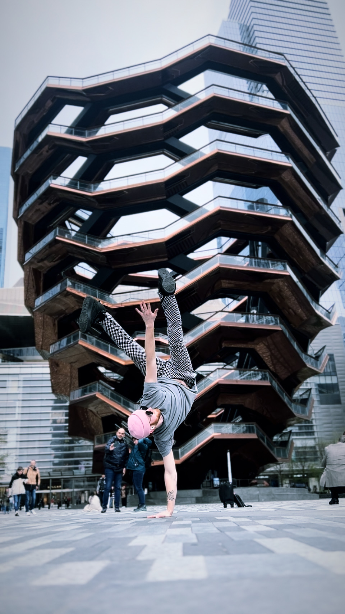

About Slink
Slink Taylor is a dance performer and teacher specializing in hip hop, breakdancing and freestyling. With years of experience rocking stages from intimate showcases to festivals, Slink brings an explosive, main stage, steezy, playful energy that captivates audiences.
Beyond the stage, Slink is passionate about passing the knowledge and passion forward as a dance instructor. Whether breaking down techniques like waving and animation or helping dancers find their own style and passionate relationship to channeling music into movement, the teaching approach is all about making concepts accessible and fun.
Available for performances, battles, workshops, and private instruction.

Experience
Slink began dancing in 2006, coming up in sought after hip hop and breakdancing performance and battle crews, where he developed a strong foundation in freestyle, cypher culture, and stage performance. Alongside street styles, Slink trained in ballet and jazz technique, building technical precision, musicality, and full-body control that continue to inform his movement.
Slink was mentored by BBoy Rybred, who was mentored by the legendary Gee One, founder of the Jabbawockeez, placing Slink in a direct lineage of innovation, style, professional integrity, and performance excellence.
As a solo performer, Slink has blessed the stage at Camp Question Mark at Burning Man, Untz Festival, Stilldream Festival, and Enigma Festival, and has danced for sets by Eazybaked, Mr. Carmack, Dimond Saints, TF Marz, Milano, Lab Rat, Cambot, and many more. His work lives comfortably in high-energy club spaces, festival stages, and bass-heavy environments, blurring the line between dancer and explosive musical embodiment.
As a dance educator, Slink has taught breaking, hip hop, and freestyle at Truckee Dance Factory since 2016 and continues to teach. His teaching emphasizes style building, technique, passion, musicality, cypher dynamics, and freestyle confidence—supporting dancers in developing both technical skill and authentic self-expression. Slink's approach explores how the practice of dance develops students' relationships with themselves in potent ways, encompassing self-love, confidence, social dynamics, integrity, authenticity, and even spirituality.
In Action
Let's Work Together
Available for festivals, showcases, battles, workshops, and private lessons.